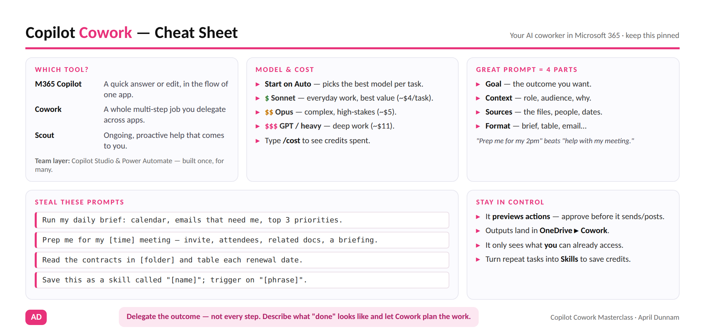

Flagship resource · Guide, prompt bank & labs
Copilot Cowork Masterclass
The slides are the textbook and the recording is the lecture — this page is the lab manual. Everything from the live Copilot Cowork Masterclass session, in one place: what Cowork actually is, a copy-paste prompt bank, 7 self-paced labs and challenges, a skills starter kit, and a one-page cheat sheet worth pinning.

If you're a Curious Professional
Cowork is the closest thing to an actual AI coworker: describe an outcome — not a step — and it plans and works across your inbox, calendar, and files. Start with the first challenge, no setup required.
If you're a Microsoft Maker
The delegation habits here — goal, context, sources, format — carry directly into Copilot Studio and Power Automate, where you're building the same kind of workflow for other people instead of running it yourself.
If you're a Technical Builder
The Skills Starter Kit below is the same
SKILL.md format covered in the
S.K.I.L.L. framework — one more surface where the
identical file runs unchanged.
What is Copilot Cowork?
Microsoft Copilot is the AI assistant built into Word, Excel, PowerPoint, Outlook, and Teams, grounded in your organization's own data through the Microsoft Graph. Copilot Cowork is the collaborative, delegated way of working that sits on top of it: instead of prompting one app at a time, you describe a whole outcome and Cowork plans and acts across apps — previewing anything it wants to send, post, or schedule before it happens.
Three ways to get AI help — and when to use which
| Tool | Use it for |
|---|---|
| M365 Copilot | A quick answer or edit, in the flow of one app, right now. |
| Copilot Cowork | A whole multi-step job you delegate in plain language, across apps. |
| Microsoft Scout | Ongoing, proactive help that comes to you — no prompt each time. |
Team-scale automation for many people at once is a different layer entirely — Copilot Studio and Power Automate, built once and run for a whole organization.
Key concepts
- Grounding
- Cowork's answers are based on your actual emails, documents, meetings, and chats via the Microsoft Graph — not just general internet knowledge.
- A good prompt
- Has a goal (the outcome), context (who/why), sources (which files or people), and a format (brief, table, email). "Prep me for my 2pm" beats "help with my meeting."
- Iteration
- Treat the first response as a draft. Refine it in the same thread rather than starting over.
- Skill
- A saved, reusable playbook Cowork loads on demand, so you stop re-prompting and cut credits. See the Skills Starter Kit.
- Credits
- Usage-based Copilot Credits (~$0.01 each) that Cowork spends per task on top of your Copilot license. Start on Auto, drop to a lighter model for routine work, and type
/costto check spend.
Glossary & FAQ
- Cowork vs. M365 Copilot vs. Scout
- M365 Copilot = a quick edit, in the flow. Cowork = a whole job you delegate. Scout = ongoing, proactive help that comes to you.
- Plugin
- An installable package that adds domain skills plus live data connectors, deployed and governed by your admin.
- MCP (Model Context Protocol)
- The open "USB-C for AI" standard that lets plugins connect Cowork to live data and APIs.
- Browser Use
- Cowork driving Microsoft Edge to complete web tasks — it hands you the tab for logins, MFA, or CAPTCHAs.
- Work IQ
- Cowork's grounding in your Microsoft Graph (people, files, meetings, org) for more accurate, context-aware results.
Common questions
Is my data safe? What about my permissions?
Cowork works within your existing Microsoft 365 boundary and only ever sees what you
already have access to. It runs under your organization's identity, DLP, and compliance
policies.
Does it take actions without asking?
No — it previews actions and asks you to approve before it sends, posts, or schedules
anything. You stay in control.
Where do the files it creates go?
OneDrive ▸ Documents ▸ Cowork. You can always ask "where did
you save that?"
Which model should I use?
Start on Auto. Use a lighter model for everyday, high-volume work; reach
for a heavier model only when the stakes justify the extra credits.
How do I get Browser Use?
It's admin-enabled in Microsoft Edge. If you don't see it, ask your IT admin.
Prompt bank
Copy these and make them yours — replace anything in [brackets]. Start on Auto; drop to a lighter model for simple, high-volume work to save credits.
☀️ Start your day
Run my daily brief: what's on my calendar, the emails that need me, and my top 3 priorities.What changed since yesterday across my email, Teams, and calendar? Just the things I need to act on.📥 Inbox & email
Triage my unread mail by priority and separate "needs action from me" from newsletters.Draft short replies to the emails that need a response. Flag anything that needs a decision instead.📅 Meetings
Prep me for my [time] meeting: check the invite, pull attendee context, find related emails and docs, and give me a briefing.Turn this meeting transcript into decisions, action items with owners, and follow-up emails.🔍 Research & documents
Research [topic/3 competitors], write a one-page brief with sources, and build a 5-slide deck.Take [document/deck] and turn the key points into a [1-pager / email / FAQ].📁 Files & organization
Read the contracts in [folder] and table each vendor, renewal date, and auto-renew clause.Analyze [OneDrive folder] and give me a structured catalog: what's here, duplicates, and what to archive.🧩 Skills (create & use)
Save this as a skill called "[name]". Trigger it when I say "[phrase]". Keep this exact format and rules.⏳ Scheduled tasks
Every weekday at 8am, run my daily brief and send it to me.🌐 Browser use (Edge)
Find my recent receipts and start an expense report on [expense site], filling vendor, date, and amount.💳 Cost & control
/costBefore you send or post anything, show me a preview first.Labs & challenges
Self-paced, step-by-step. Do them in order or jump to what you need — every prompt is copy-paste ready. Before any exercise: open Copilot Cowork, leave the model on Auto.
Challenges (quick reps, ~5–12 min each)
Challenge 1 — Your First Cowork Conversation (~8 min, needs nothing but your own inbox & calendar)
Goal: feel the difference between a single-shot prompt and a multi-step, cross-app conversation with an AI coworker.
- Open Copilot Cowork. Leave the model on Auto.
- Try:
What's on my calendar today and what should I prioritize? - Watch the plan unfold across more than one app — not just a one-line answer.
- When it offers to send/post/schedule anything, read the preview before you approve.
- Keep going in the same thread:
Now turn that into a 3-bullet summary I can paste into Teams.
Stretch: Check my calendar for today, then draft prep notes for my first meeting.
Challenge 2 — The Morning Kickstart (~10 min)
Goal: chain several tasks in one conversation, the way you'd brief a real coworker on a Monday.
It's Monday morning. Get me fully prepped for the week:
1) brief me on today — meetings, key emails, and priorities
2) prep me for my first meeting
3) find and summarize a document relevant to my work this week
4) draft a status update email to my managerApprove or edit each action as it goes. Refine in-thread: Make the status email shorter and add a "blockers" line.
Stretch: Now schedule this same briefing to run every weekday at 8am.
Challenge 3 — Build Your Own Skill (~12 min)
Goal: turn a task you repeat into a reusable Skill, so you stop re-prompting and cut credits.
- Pick a task you do often (weekly report, meeting prep, a standard email).
- Get a good result the manual way first.
- Save it:
Save this as a skill called "weekly-status-report". Trigger it when I say "run my weekly status". Keep this exact format and only use the status labels On Track, At Risk, Blocked, Complete, Not Started. - Name it clearly with a good trigger-phrase description — that's what makes it fire.
- Test it in a fresh chat with the trigger phrase, then check the cost with
/cost.
See the finished example in the Skills Starter Kit below.
Challenge 4 — Let Cowork Drive the Browser (~8 min, needs Edge with Browser Use enabled)
Goal: watch Cowork act on the open web, and feel exactly where it hands control back to you.
Go to [internal portal], pull this week's status into a short summary, and paste it back to me.When it hits a login, MFA, or CAPTCHA, it hands you the tab — complete that step, then let it resume. Review the final result before anything is submitted.
No Browser Use? It's admin-gated — note it for your IT team.
Labs (end-to-end scenarios, ~25 min each, teams of 3–4)
Lab A — The New Project Kickoff
Scenario: you've just been handed a new cross-functional project. Go from a pile of context to organized and ready to lead.
- Upload the project brief and kickoff email.
Read the brief and kickoff email. Give me a one-page summary: objective, scope (in/out), timeline, team, and the top 3 risks.Draft a 30-minute kickoff meeting agenda that closes the two open decisions, and a stakeholder email inviting the team with what to bring.What's missing or unclear in this plan? List the questions I should resolve before we start.
Deliverable: a one-page project summary plus a ready-to-send kickoff email and agenda.
Lab B — The Executive Update
Scenario: your VP needs a status update by end of day — sharp, on-brand, and grounded in real numbers.
- Upload status data, quarterly results, and a brand style guide.
Read the status data and quarterly results. What are the 3 things a VP needs to know, and what's the single biggest risk?Write a one-page executive update following our brand style guide: overall status, key metrics vs last quarter, risks with owners, and decisions needed. Keep the tone plain and direct.- If there's time:
Turn that into a 3-slide summary I could drop into a leadership deck.
Deliverable: a leadership-ready status summary, bonus 2–3 slides.
Lab C — The Inbox Zero Sprint
Scenario: your inbox is out of control. Regain order, and draft your way back to zero.
Triage these emails by priority. Separate "needs action from me" from newsletters/noise, and tell me what's time-sensitive.Draft short, appropriate replies to the action-needed items. Flag anything that needs a decision rather than a reply.Summarize what's left and suggest what I can archive or unsubscribe from.
Deliverable: a triaged inbox plan plus 2–3 drafted replies.
Stretch: Create a skill called "inbox triage" that does this every morning and shows me only what needs me.
Skills starter kit
A skill is a saved playbook — plain-language instructions Cowork loads on demand, so you
stop re-prompting and cut credits. Fastest way to make one: get a great result manually,
then say Save this as a skill called "[name]". Trigger it when I say "[phrase]".
Or author the file yourself from the template below and drop it in
OneDrive ▸ Documents ▸ Cowork ▸ skills ▸ your-skill-name ▸ SKILL.md.
What makes a skill fire: a precise kebab-case name, a description with the exact trigger phrases you'll actually say, and one scenario per skill.
Template
---
name: your-skill-name
description: Use when I say "[trigger phrase]" or "[another phrase]". [One sentence: what it does.]
---
# Your Skill Title
## When to use
Trigger on: "[phrase 1]", "[phrase 2]".
## Steps
1. [First thing to do — which files/sources to read]
2. [Next step]
3. [Produce the output in the format below]
## Output format
[Exactly what you want back — headings, length, tone.]
## Rules
- [Formatting or label constraints]
- Never invent data — if something's missing, say so.Worked example: meeting-prep
---
name: meeting-prep
description: Use when I say "prep me for my [time] meeting" or "prep my next meeting". Builds a briefing from the invite, attendees, and related email/docs.
---
## Steps
1. Find the meeting on my calendar and read the invite + agenda.
2. Pull attendee context and any related emails or documents from the last 2 weeks.
3. Produce the briefing: purpose & desired outcome, who's there, what you need to know
(3-5 bullets), likely questions/decisions, your talking points.
## Rules
- Keep it to one screen.
- Flag anything unresolved from the last related thread.Worked example: weekly-status-report
---
name: weekly-status-report
description: Use when I say "run my weekly status" or "Friday wrap-up". Compiles a project status from the status data and recent emails into our standard one-page format.
---
## Output format
- **Overall:** On Track / At Risk / Blocked
- **Done this week:** 3 bullets
- **Up next:** 3 bullets
- **Risks / blockers:** owner + mitigation
- **Decisions needed:** who + by when
## Rules
- Use only these labels: On Track, At Risk, Blocked, Complete, Not Started.
- If any milestone is Blocked, put ⚠ at the top and list the blocker first.
- Never invent numbers — if data is missing, say "data not available."Downloads & credits
{kind=link}
Official Microsoft docs
- Copilot Cowork — overview
- Get started with Copilot Cowork
- Copilot Cowork — common questions (FAQ)
- Manage Copilot Cowork for your organization (admin & governance)
This page is original material from April Dunnam, built for the live Copilot Cowork Masterclass session and folded into AI with April so it has one home. Sample exercise data referenced in the labs is fictional ("Northwind Traders / Project Atlas"). Skill files use the open agentskills.io format, also covered in the S.K.I.L.L. framework.